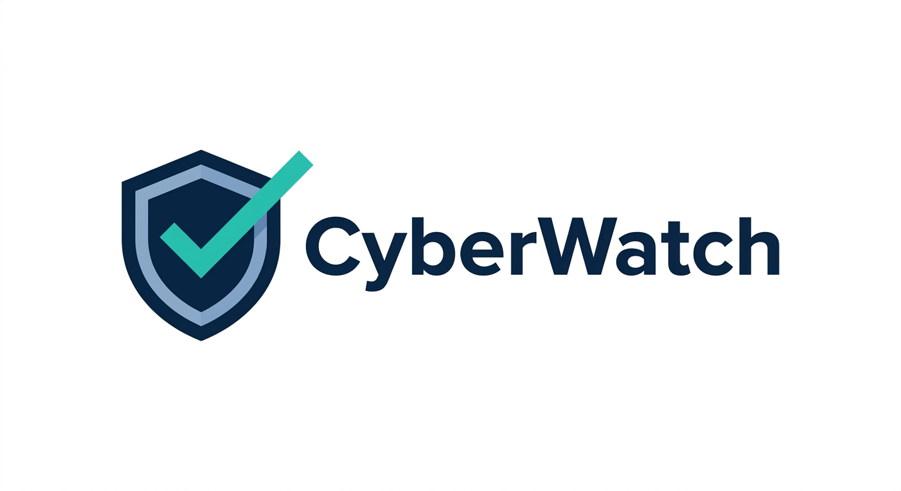
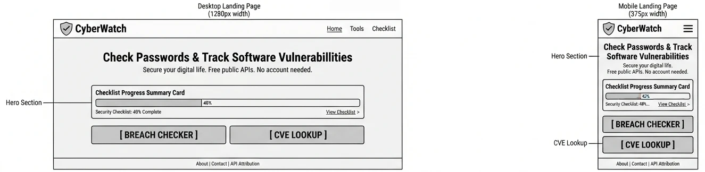
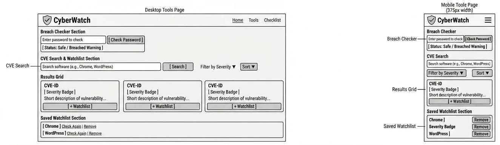
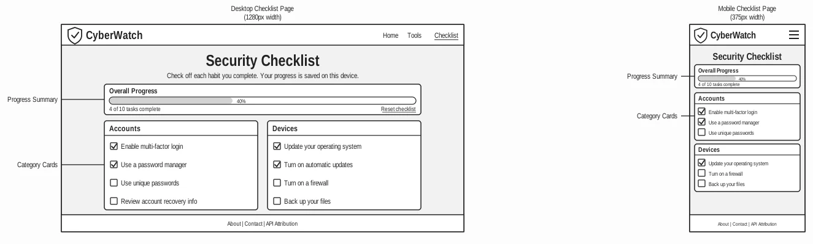

Overview
Purpose
CyberWatch is a personal security dashboard that helps everyday users check whether a password has appeared in a known data breach, look up recent software vulnerabilities (CVEs), and track their own security habits. It uses free public APIs so that people can get clear, trustworthy security information without creating an account or sharing their passwords with anyone.
Audience
The audience is non-expert computer users, such as students, families, and small business owners, who want simple guidance on staying safe online. It is also useful to beginners in IT or cybersecurity who want a quick way to look up vulnerabilities in the software they use. All instructions are written in plain language with no technical background needed.
Dynamic elements
JavaScript will make the site interactive in four ways:
- Breach checker: when the user submits a password, the script hashes it in the browser, sends only the first 5 characters of the hash to the Pwned Passwords API, and shows whether it was found in a breach. The full password is never sent or stored.
- CVE search and watchlist: the user searches by software name, the app fetches matching vulnerabilities from the NVD API, and results are shown as cards color-coded by severity. Users can sort or filter by severity and save software to a watchlist that persists in
localStorage. - Security checklist: an array of habit objects (enable MFA, update software, etc.) that users can check off, with a progress percentage that updates live.
- Feedback states: the page shows loading, error, and empty-result messages depending on what happens with each request.
Branding
Website Logo

Style Guide
Color Palette
Palette: deep navy, soft blue, teal, and alert red. Red is used only for warnings such as "breached" or "critical," always paired with a text label.
| Primary | Secondary | Accent 1 | Accent 2 |
|---|---|---|---|
| #0B2545 (deep navy) | #8DA9C4 (soft blue) | #2EC4B6 (teal) | #E63946 (alert red) |
Pseudocode
- Define data:
checklistItems: array of objects{ id, task, category, done }watchlist: array of strings or objects; load fromlocalStorageif it exists, otherwise start empty
- When the page loads:
- Render the checklist and watchlist
- Update the progress display
- Breach checker (on form submit):
- If the input is empty, show an error and stop
- Hash the password with SHA-1 in the browser
- Split the hash into the first 5 characters (prefix) and the rest (suffix)
- Fetch
range/{prefix}from the Pwned Passwords API - Split the response into lines and look for the suffix
- If found, show "Found in X breaches, don't use this password"; if not, show "Not found in known breaches"
- If the fetch fails, show an error message
- CVE search (on form submit):
- If the keyword is empty, show a message and stop
- Show a "Loading..." message and disable the button
- Fetch results from the NVD API
- If there are no results, show "No vulnerabilities found"
- Otherwise use
mapto turn each result into a card with ID, description, and score - Use
if/elseon the score to assign Low, Medium, High, or Critical - Re-enable the button when finished
- Filtering and sorting: when the user picks a severity, use
filteron the results array and re-render - Watchlist:
- On "Add": if the item is already in the array, tell the user; otherwise push it, save to
localStorage, and re-render - On "Remove": filter it out, save, and re-render
- On "Check again": run the CVE search for that item
- On "Add": if the item is already in the array, tell the user; otherwise push it, save to
- Checklist: on toggle, find the item, flip its
donevalue, save, and recalculate progress withfilter(item => item.done).length / total
Wireframes
Landing page
The landing page has a header with the CyberWatch logo and a navigation bar (Home, Tools, Checklist), which collapses into a hamburger menu on mobile. The hero section holds the headline "Check Passwords & Track Software Vulnerabilities," a short tagline, a checklist progress summary card with a progress bar and a "View Checklist" link, and two large buttons for the Breach Checker and CVE Lookup tools. A footer links to About, Contact, and API Attribution. The desktop layout (1280px) places the two buttons side by side; the mobile layout (375px) stacks everything in a single column.

Tools page
The tools page starts with the Breach Checker section: a password input, a "Check Password" button, and a status line that shows Safe or a Breached warning. Below it, the CVE Search & Watchlist section has a software search box, a Filter by Severity control, and a Sort control, followed by a results grid of cards. Each card shows the CVE ID, a severity badge, a short description, and a "+ Watchlist" button. The Saved Watchlist section lists each saved item with "Check Again" and "Remove" actions. On desktop the results grid has three columns; on mobile the cards stack in one column.

Checklist page
The checklist page uses the same header and navigation as the other pages, with "Checklist" as the active link. It has a page title, a short instruction line, and an overall progress card with a progress bar, a count of completed tasks, and a "Reset checklist" link. Below that, the security habits are grouped into category cards (Accounts and Devices), each with checkboxes. On desktop the two category cards sit side by side; on mobile they stack in a single column.
